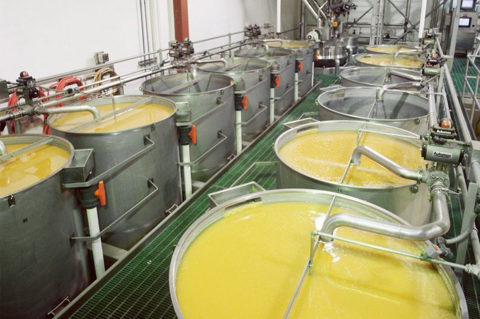
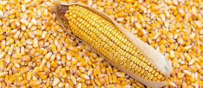

Etapa Agrícola
La etapa agrícola incluye todas las actividades desde la siembra hasta la cosecha del maíz.
Leer más

Etapa Industrial
La etapa industrial del maíz transforma el grano en productos como harina y biocombustibles.
Leer más

Etapa Comercial
La etapa comercial se refiere a la venta del maíz, a cubrir la logística y distribución del producto obtenido.
Leer más